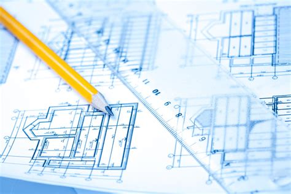

Hello and welcome to my personal page all about me and how I see my future career. My name is Dominae Ponds and I am currently nineteen years old. I am from the heart of Kansas City, Missouri where I graduated from Southeast High School. While in school, I ran track as a sprinter and played softball. I was a part of the National Honors Society, the 20/20 Leadership Program, and was an A and B honor roll student.
I am a first year and first generation college student attending Graceland University in the little town of Lamoni, Iowa. I am currently majoring in Graphic Design because I want to become a future architect. I love what I do when it comes down to me designing a website and coding.
